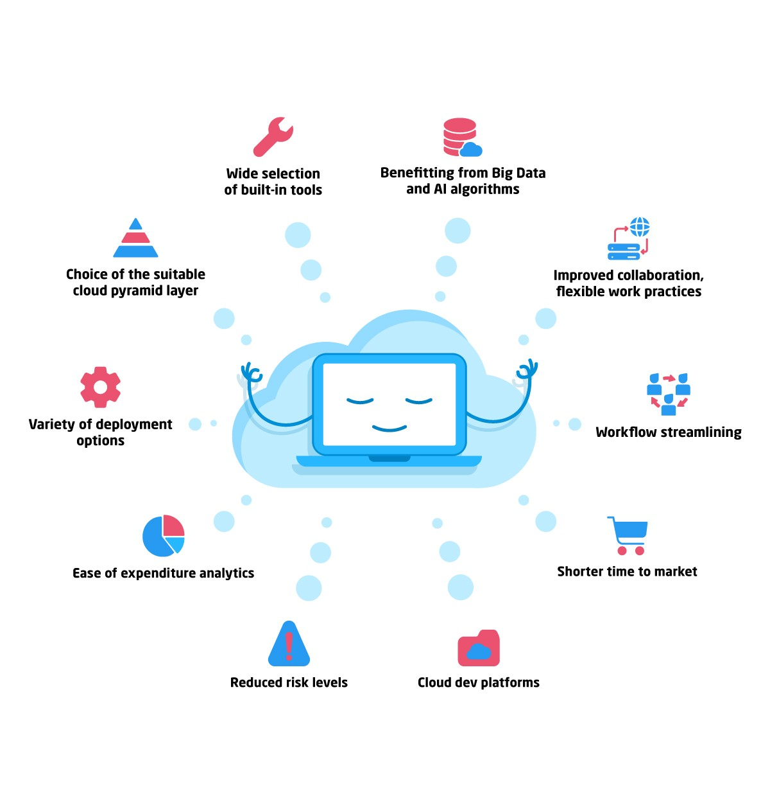

Still using 2-factor authentication? Think again...
For years, two-factor authentication has been the most important advice in personal cybersecurity — one that consumer tech companies were surprisingly slow to recognize. The movement seemed to coalesce in 2012, after journalist Mat Honan saw hackers compromise his Twitter, Amazon, and iCloud accounts, an incident he later detailed in Wired. At the time, few companies offered easy forms of two-factor, leaving limited options for users worried about a Honan-style hack. The result was a massive public campaign that demanded companies to adopt the feature, presenting two-factor as a simple, effective way to block account takeovers...
Click here to read more.
Things every developers need to know about the cloud

Nowadays, everyone is using cloud computing. From tech companies to the pizza place down the block – cloud computing has made its way into virtually every industry in the market. However, no matter how prevalent it seems, not many people know that much about the intricacies of this impressive technology....
Click here to read more
Wix shift in turbo: your site now loads faster than ever
Take a look at what is happening around you. You can see it in the news, social media, online retail. We live in a world that strives for speed and efficiency. With 5G around the corner and increasingly sophisticated devices, any information we desire is available in the palms of our hands. As a result, our expectations have grown - and our patience has dramatically declined.
Click here to read more